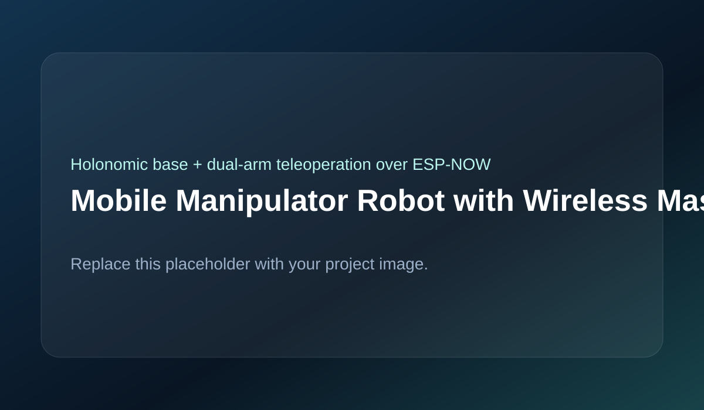

Built a distributed robotic platform consisting of a mecanum-wheel mobile base, dual robotic arms, and a wireless master controller with encoder-based arm mirroring for intuitive teleoperation.

The system includes a wireless master controller with a joystick and two encoder-equipped physical arms, a holonomic mecanum-wheel base controlled by one ESP32, and a dual-arm manipulation subsystem controlled by another ESP32. Controller encoder data is transmitted in real time using ESP-NOW and mirrored on the robot side. The base supports forward, lateral, and rotational motion while the arm subsystem converts encoder positions into motor commands and synchronizes dual-arm motion.
ESP-NOW was selected over standard Wi‑Fi because it provides lower latency and simpler peer-to-peer communication for teleoperation. Base and arm control were separated onto different ESP32 boards to reduce timing conflicts and wiring complexity. Encoder-based mirroring was chosen instead of button or velocity commands to create more intuitive position-level control.
Challenges included synchronizing multiple ESP32 boards reliably, preventing packet timing jitter, coordinating four mecanum wheels without drift, maintaining stability with a higher center of gravity, synchronizing dual-arm motion without lag, and managing heavy wiring from multiple drivers and actuators.
The final system demonstrated real-time wireless teleoperation, coordinated holonomic movement, mirrored encoder-based arm control, and a stable modular distributed architecture validated through subsystem-level testing.